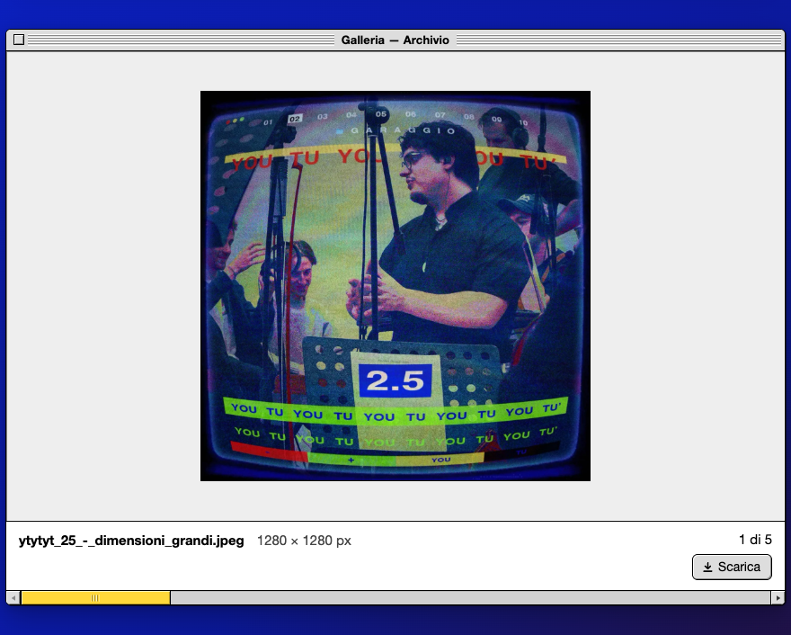
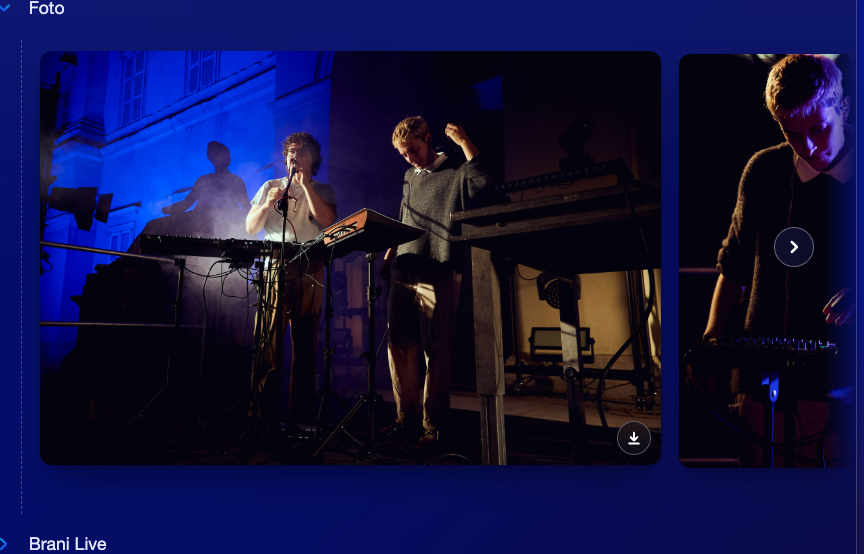

Nelle gallerie che vuoi rendere scaricabili (per esempio nel press kit) compare un pulsante che scarica la foto originale, con il suo nome, come vero download. Funziona in entrambe le gallerie e si attiva solo dove metti il segno ⬇️ (va bene anche 📥).
| Galleria | Cosa scrivi in Notion | Cosa compare sul sito |
|---|---|---|
| Finestra 🗂️ / 🗃️ | Il segno in un punto qualsiasi del titolo: 🗃️ Press kit ⬇️ | Pulsante Scarica sotto il contatore «1 di 5»: scarica la foto mostrata. |
| Striscia 🖼️ | Prima riga del callout 🖼️ ⬇️ oppure Galleria ⬇️; con 🖼️ come icona basta una riga ⬇️. | Su ogni foto un pulsante tondo con la freccia, in basso a destra: col mouse compare passando sulla foto, su telefono e tablet è sempre visibile. |
Il segno non si vede sul sito. Senza segno la galleria resta com'è, senza pulsanti. Il clic sul pulsante scarica soltanto: il clic sulla foto la ingrandisce come sempre.

Aggiorna la sezione 8. In Notion non cambia nulla: questi sono i comandi definitivi sul sito.

Aggiorna la sezione 10. All'apertura della pagina il menu sta al centro della foto. Un clic o il tasto destro sulla foto lo riaprono nel punto premuto, come prima. Se vuoi un punto preciso scrivi ancora i due numeri dopo il segno, in percentuale da sinistra e dall'alto: 🖱️ 60 25. Senza numeri: al centro.
Novità senza nulla da fare in Notion.
Il promemoria di tutto ciò che si scrive in Notion per ottenere gli elementi del sito. Il numero rimanda alla sezione della guida.
| Segno | Dove si scrive | Risultato | Sez. |
|---|---|---|---|
| 🖼️ 📷 📸 «Galleria» | Icona o prima riga del callout, foto dentro | Galleria a scorrimento orizzontale | 8, 25 |
| 🗂️ 📇 «Raccoglitore» | Icona o prima riga del callout, foto dentro | Galleria a finestra Mac classica; il testo dopo il segno è il titolo | 9, 17 |
| 🗃️ | Come 🗂️ | Galleria a finestra «Platinum ritoccato» | 9, 17 |
| ⬇️ 📥 | Insieme al segno di una galleria | Pulsante per scaricare le foto originali | 24 |
| 🖱️ (+ 60 25) | Didascalia della foto con un database subito sotto; icona del callout; nome del database | Menu tasto destro del Mac sopra la foto (al centro, o nel punto indicato) | 10, 26 |
| --- — | Titolo di una riga del database del menu | Linea di separazione nel menu | 23 |
| 🔔 | Prima riga del callout: 🔔 Piccolo | Grande | Riquadro notifiche in stile macOS | 21 |
| 🔒 | Come 🔔 | Schermata di blocco iPhone con notifiche | 21 |
| emoji Titolo | quando | testo | Ogni riga dentro il callout 🔔/🔒 | Una notifica (cliccabile con un link o una menzione @) | 21 |
| // Testo | Riga dentro il callout 🔔/🔒 (o un titolo di Notion) | Divisorio grande come «Centro notifiche» | 21 |
| 🛍️ | Didascalia di un segnalibro (bookmark); icona dall'immagine subito sopra | Riga in stile App Store con «Ottieni» | 19 |
| 👁️ (o nessun segno) | Didascalia di un segnalibro | Anteprima in stile Quick Look | 19 |
| 🙈 | Icona di un callout con dentro le sottopagine | Sottopagine nascoste, raggiungibili solo dai link | 22 |